Moje wspomnienia / retro komputer
ZX Spectrum.
To były piękne czasy...
Po szkole, przed telewizorem...
Siadało się po szkole przy biurku, podłączało „kompa” do telewizora (ja miałem Junosta)...
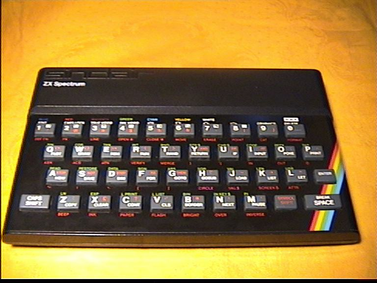
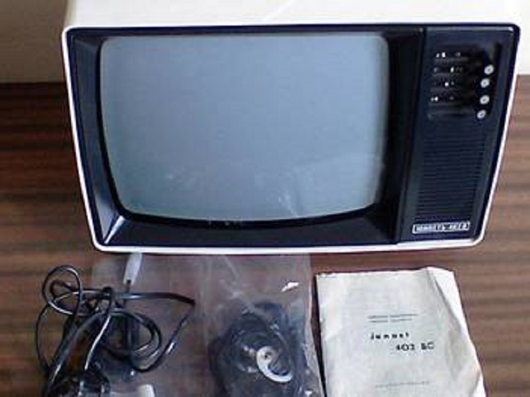
Do tego „kaseciaka” i... czekało się kilka, kilkanaście minut lub dłużej, aż gra się wgra (lub nie).
Gry ZX Spectrum
Kliknij miniaturkę, aby zobaczyć większy obraz.
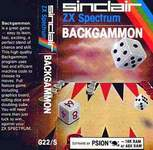
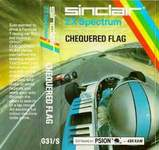
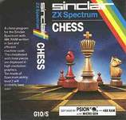
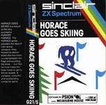
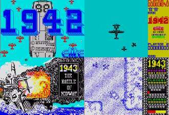
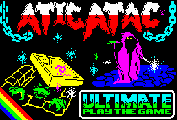
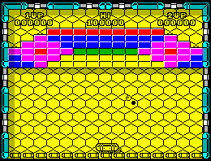
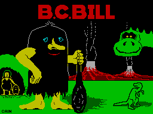
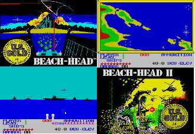
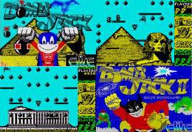
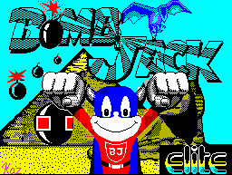
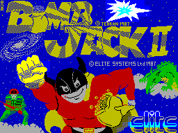
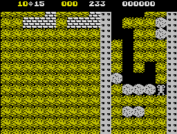
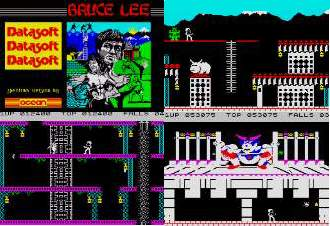
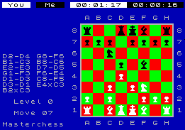
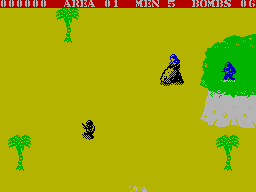
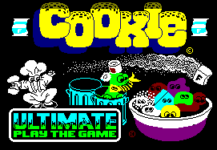
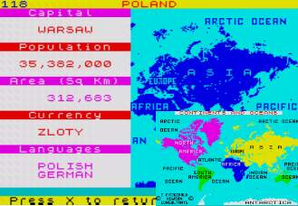
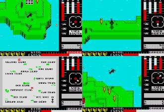
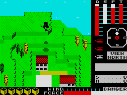
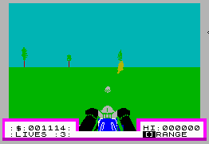
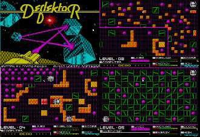
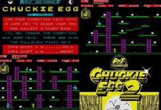
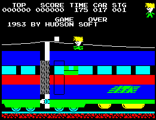
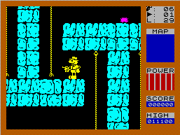
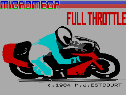
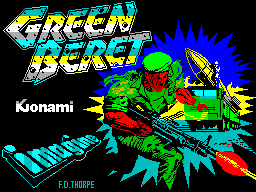
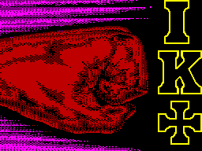
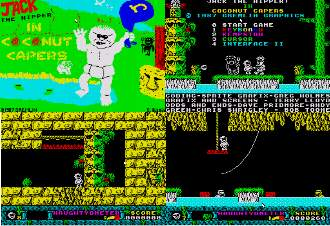
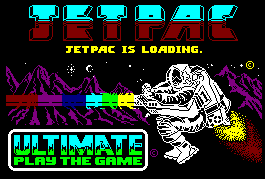
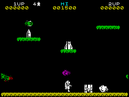
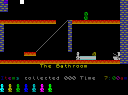
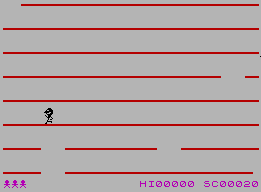
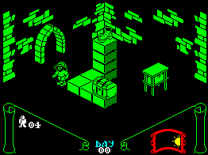
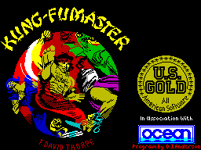
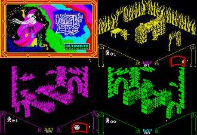
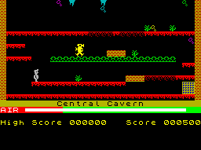
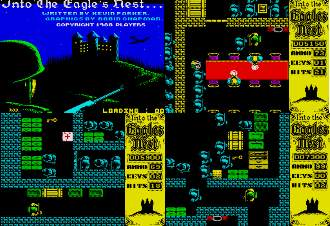
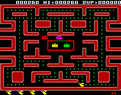
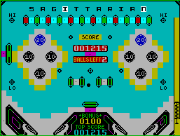
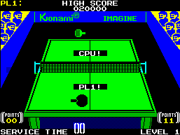
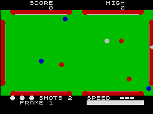
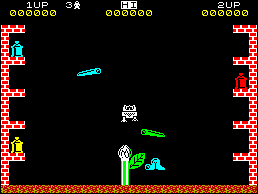
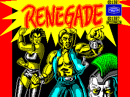
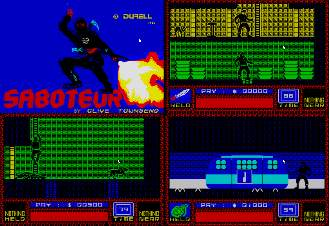
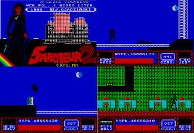
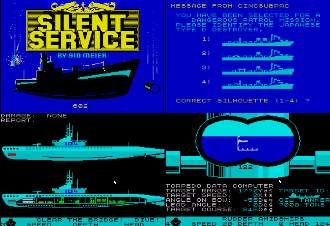
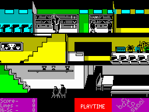

Niestety, czasy te bezpowrotnie minęły. Dzisiejszym 50-latkom mogę jedynie polecić namiastkę, która tylko w niewielki sposób odzwierciedli tamte wspaniałe czasy: ponad 30 emulatorów na różne systemy operacyjne, na których można uruchomić programy edukacyjne, demonstracyjne, narzędziowe i gry.
Przewodnik: sprzęt, gry i emulacja
ZX Spectrum: od gumowych klawiszy do modelu 128K
ZX Spectrum 48K zadebiutował w 1982 roku jako stosunkowo przystępny komputer domowy. Kojarzy się z gumową klawiaturą, ładowaniem programów z kaset i charakterystyczną grafiką. Późniejsze modele 128K oferowały więcej pamięci i rozbudowane możliwości dźwiękowe, ale nie wszystkie gry korzystały z tych dodatków.
Ograniczenia kolorów ekranu sprawiały, że przy blisko położonych obiektach mogły pojawiać się charakterystyczne „przenikania” barw. To tzw. attribute clash — cecha architektury obrazu, a nie błąd współczesnego emulatora.
Jak uruchomić Spectrum na współczesnym komputerze?
- Wybierz emulator, np. Fuse, i ustaw właściwy model Spectrum.
- Sprawdź format posiadanego pliku: TAP i TZX opisują zapis taśmowy, a SNA i Z80 często służą jako migawki stanu komputera.
- Załaduj plik przez menu emulatora. W przypadku obrazu taśmy może być potrzebne uruchomienie standardowej procedury ładowania.
- Skonfiguruj sterowanie. Starsze gry korzystały z różnych układów klawiszy lub interfejsów joysticka.
Nie każdy plik z internetu można legalnie udostępniać dalej. Zwracaj uwagę na licencje i zgodę właścicieli praw.
Dlaczego warto wracać do tych gier?
Jetpac pokazuje, jak z prostych zasad zbudować wciągającą zręcznościówkę. Manic Miner jest przykładem precyzyjnej platformówki, a Chequered Flag pozwala zobaczyć wczesne próby przedstawienia wyścigów na domowym komputerze. W galerii można więc oglądać nie tylko wspomnienia, ale także rozwój pomysłów projektowych.
Materiały: World of Spectrum oraz dokumentacja Fuse.